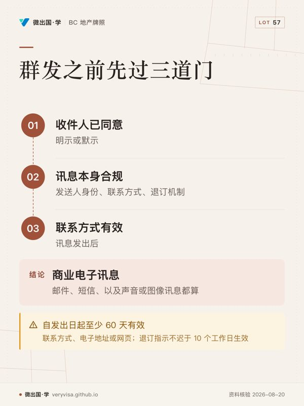

🃏 Flashcards · 3 闪卡 · 3 张 🖼 Slides · 2 幻灯 · 2 页 ✍️ Questions · 10 刷题 · 10 道
建筑·营销·技术 practice-misc P3 过一遍 P3 Skim
ZH EN ZH + EN
先看这一章怎么考 First, how this chapter is tested
四层归属题：同一部手机上的行为，问它归执业、隐私、营销触达还是电子形式。真正考的是四层各管一段、同时适用，违反另外三层时仍可按诚实与合理谨慎追究。 Layer questions take one act on the same phone and ask whether it belongs to practice regulation, privacy, marketing outreach, or electronic form. What they test is that the four layers each govern one stretch and apply at the same time, and that a breach of any of the other three can still be pursued under honesty and reasonable care and skill. 署名与修饰题：中文广告、资料页、联合挂牌，或一张改过的照片。真正考的是经纪行持牌名必须按登记原样出现，以及修掉的东西是杂物还是这处物业的现实条件。 Name and edit questions use a Chinese advertisement, a profile page, a joint listing, or an altered photograph. What they test is that the brokerage's licensee name must appear exactly as registered, and whether what was removed is clutter or a real condition of the property. 电子形式题：买卖合同、挂牌、披露表，对比须登记的产权转让。真正考的是电子签名一般算数，创设或转让土地权益且须登记的文件被排除，卖方不能只在屏幕上完成转让。 Electronic-form questions set a contract of purchase and sale, a listing, or a disclosure form against a transfer of title that must be registered. What they test is that an electronic signature generally counts, that a document creating or transferring an interest in land which must be registered is excluded, and that the seller cannot complete the transfer on a screen alone. 最常丢分的陷阱（看到题干信号就警觉） Traps that cost the most marks (watch for the signal in the stem)
译名当持牌名 Treating a translation as the licensee name 广告、名片、电台口播或社交资料页上的行名，是译名、简称或只有标志，而不是执照上的全称。 The brokerage name on an advertisement, a business card, a radio read, or a social profile page is a translation, a short form, or only an emblem, and not the full name on the licence. 电子签套到转让 Extending an e-signature to a transfer 文件是产权转让、创设或转让土地权益，并且要拿去登记；或者有人说卖方自己在屏幕上签名就能过户。 The document is a transfer of title, or it creates or transfers an interest in land, and it is to be registered. Or someone says the seller's own signature on a screen is enough to transfer title. 用现行口径答卷 Answering with the current standard 题干出现 licensing exam、course manual，或问考试要的是哪一套、课程原文怎么写。 The stem says licensing exam or course manual, or it asks which version the exam wants, or how the course manual puts it. 本章考点页：导图、要点表、7 道带逐项解析的练习 →
本章地位 ：全书时效性最差的一章。考试口径这一章成书于 2020 年，讲的是无人机、DSLR、网站
搜索引擎优化、社交媒体运营技巧——那些内容本身没有对错，但它对"用这些工具时你受哪些规矩管"
的描述，条号、监管机构、指引全部换过一轮 。本篇不复述工具介绍，只重建规矩这一面。
核实日期：2026-09-05 ，出处见文末源表。
科技这一章有个奇怪的性质：读者往往觉得它最简单——谁不会发邮件、谁不会用微信？
但监管机构真正开罚单最密的地方，恰恰是这一章 ：广告里没写经纪行名字、团队没注册、
用个人社交账号谈生意、把客户资料喂进 AI 工具。这些都不需要专业知识就能违规，
也正因为如此，它们几乎没有"我不知道"的辩解空间。
一句话概括整章：科技不创造新的义务，它放大旧义务的暴露面。
你在咖啡馆口头说错一句话，只有一个人听见；同一句话发到社交媒体上，
它有截图、有时间戳、可以被无限转发，并且在你删掉之后依然存在。
一、制度地位：四层法域同时压在同一部手机上 本节回答 This section answers 广告违规会不会按天加罚 Whether an advertising breach adds a penalty for each day 本章考题 1 Question 1
图：四层法域——它们各管一段，互不替代
持牌人用一部手机做业务时，同时受四套规矩管，它们各管一段，互不替代 ：
四层里只有第一层是 BCFSA 管的 ，但另外三层出问题时，BCFSA 照样可以用规则第 33 条
（诚实义务）和第 34 条（合理谨慎与技能义务）追究你——"我违反的是隐私法，不关地产监管的事"
这个说法不成立 。BCFSA 的《人工智能指引》就是这么写的：使用 AI 不豁免你的任何法律与道德义务。
ℹ️
为什么这一章值得认真读
规则第 26 条把违规分成 A–F 六档罚款。广告类（第 39、40、41、42 条）与电子记录（第 91 条）
落在 D 档 ：首次基础罚款 $1,000、再次 $2,000，并且每持续一天（或一天的一部分）另加 $250 。
团队规则里的实体条款（第 42.4 条第 1 至 5 款）落在 C 档 ：首次 $5,000、再次 $10,000。
"每天加 $250"这个设计说明了监管者的意图：广告违规是持续状态，不是一次性动作 ——
一条挂了三个月没写经纪行名字的网页，罚的是三个月。
节末检索小测 · 先别往回翻，凭记忆作答 Quick recall check: answer from memory before scrolling back
A web page advertising one house leaves out the brokerage's licensed name and stays online for many days. A colleague says an advertising breach is a single act, counted once on the day the page went up. Which statement matches this lesson?
一个网页在为一处房屋做广告时没有写经纪行的持牌名，并且连续许多天挂在网上。同事说，广告违规是一次性行为，只按页面发出的那一天算一次。哪一句话符合这一课？
a Rules 39 to 42 are Category D: $1,000 first, $2,000 next, plus $250 for each day or part of a day it continues. ✓ 规则第39、40、41、42条的广告和第91条的电子记录都在D档。首次基础罚款$1,000、再次$2,000，并且每持续一天或一天的一部分另加$250。广告违规被设计成持续状态，页面挂着的每一天都算，不是只算发出那一下。 Advertising under rules 39, 40, 41, and 42, and electronic records under rule 91, are all Category D. The base amount is $1,000 the first time and $2,000 the next time, plus $250 for each day or part of a day the breach continues. An advertising breach is built as a continuing state. Each day the page stays up counts. It is not counted only at the moment it was published.
b Advertising breaches are Category C. The first amount is $5,000 and the next is $10,000, with no daily addition for a missing brokerage name. ✗ 首次$5,000、再次$10,000是团队实体约束所在的C档，即规则第42.4条第1至5款，不是漏写行名这种广告条款。这是把团队那一档套到了广告上。 A first amount of $5,000 and a next amount of $10,000 are Category C, where the constraints on the team as an entity sit, namely rule 42.4, subsections (1) to (5). They are not the advertising provisions about a missing brokerage name. This applies the team category to advertising.
c The breach is one act on the publication day. Later days do not add $250, because a web page cannot be a continuing state. ✗ 按天加罚就是针对这种挂着不改的状态。一条没写经纪行名字的网页，罚的是它持续的那些天，不是只罚发布动作的那一天。这是把持续状态读成了一次性动作。 The daily addition is aimed at this state of leaving the page up and uncorrected. For a web page that omits the brokerage name, the penalty runs for the days it continues, not only for the day of the act of publishing. This reads a continuing state as a one-time act.
d Only an electronic-record breach can carry a dollar amount. An advertising omission is guidance, and guidance has no penalty. ✗ 广告四条本身就在D档里，有基础金额也有按天累加。指引不是这道题的处罚依据，漏写持牌名直接落在规则第40条。这是把广告违规读成了没有罚款的建议。 The four advertising rules themselves sit in Category D. They have a base amount and a daily addition. Guidance is not the penalty basis for this item. Omitting the licensee name falls directly under rule 40. This reads an advertising breach as advice that carries no penalty.
看答案与每个选项的解析 Show the answer and why each option is right or wrong 答案 Answer ：a
二、考试口径（©2020）说的 vs 2026 现行 本节回答 This section answers 卷面说披露表由谁发布 Who the answer sheet says publishes the disclosure form
这是本篇最值钱的一张表。左列全部是考试口径里的通行说法，右列全部回一手源核过。
⚠️
第 10 行是这张表里最容易被忽略的一行
一整章都在过时，读者很容易得出"这章别看了"的结论。但恰恰是电子签名这一节，
考试口径写得对而且现在仍然对 ——如果你因为整章过时而跳过它，你会在考场上丢掉本可以拿的分。
判断"考试口径有没有过时"要一节一节判，不能一章一章判。
节末检索小测 · 先别往回翻，凭记忆作答 Quick recall check: answer from memory before scrolling back
The licensing exam asks who publishes the Disclosure of Representation form, and the item follows the course manual. Which answer does the exam want?
执照考试问《地产服务代表关系披露》表由谁发布，这一题按课程原文作答。考试要的是哪一个？
a The regulator, which the manual already treats as the body that prescribes the form and adds home-buyer rescission wording. ✗ 表由监管机构规定并发布、并写进撤销权，是现行规则第54条、自2023-01-03起的内容，不是课程原文。这是用现行发布机构答卷。 The form being prescribed and published by the regulator, with the rescission right written into it, is current rule 54, in force from 2023-01-03. It is not the course manual. This answers with the current publishing body.
b The national association that owns the listing-service marks, because the form is a membership certificate. ✗ 拥有MLS®和REALTOR®商标的是全国协会，那是会员和商标问题，不是这张代表关系披露表的发布者。课程原文没有把这张表交给该协会。这是把商标所有人当成了表格发布者。 The national association owns the MLS and REALTOR marks. That is a membership and trademark question, not who publishes this Disclosure of Representation form. The course manual does not give this form to that association. This treats the owner of the marks as the publisher of the form.
c The provincial real estate association named in the course manual, which the manual treats as the publisher of that form. ✓ 考试口径说这张表由BC地产协会（BCREA）发布。现行该表由BCFSA规定并发布，依据规则第54条，且自2023-01-03住宅买家撤销权生效日起，表内加入了撤销权的内容。 The exam standard says this form is published by the BC Real Estate Association (BCREA). Under the current law the form is prescribed and published by BCFSA under rule 54. From 2023-01-03, the day the home buyer rescission right took effect, the rescission content was added to the form.
d Each brokerage drafts its own form, and no outside body is named by the course manual as the publisher. ✗ 课程原文点名了省级协会作为发布者，不是各经纪行自制、也不是没有发布机构。现行同样不是经纪行自制，而是由监管机构规定并发布。这是把法定表格读成了内部文稿。 The course manual names the provincial association as the publisher. The form is not one each brokerage drafts for itself, and it is not a form with no publisher. The current law is also not a brokerage draft. The regulator prescribes and publishes the form. This reads a prescribed form as an internal draft.
看答案与每个选项的解析 Show the answer and why each option is right or wrong 答案 Answer ：c
三、广告与社交媒体：品牌名不算数，经纪行名才算 本节回答 This section answers 同一团队能否分代理买卖双方 Whether one team can be split between the seller and the buyer 本章考题 2 Question 2
3.1 三条硬条文
"地产广告"的定义比直觉宽得多：BCFSA 的定义是任何形式的标识、推广、招揽或表述 ，
只要与不动产、不动产交易或地产服务有关，包括招牌与告示。
所以它涵盖你的微信朋友圈、小红书笔记、抖音短视频、YouTube 频道简介、名片、车贴、开放日指示牌。
3.2 BCFSA 的落地口径（广告指引，2021-05-04）
社交媒体 ：出于业务目的使用社交媒体的，个人资料页（profile screen）必须写上所属经纪行名称 ；
不要求每一条帖子都写 。这是一条对持牌人友好的口径，但反过来说——
个人资料页上没写，你发的每一条帖子都在违规状态里。电台广告 ：口播同样要清楚标明经纪行名称，BCFSA 会看它在整条广告里的显著程度 ，
以及消费者辨认经纪行的难易。联合挂牌（co-listing） ：广告必须清楚写出两家 经纪行的名称；若用了地址，必须让人看得出
哪个地址属于哪一家。团队 ：所有用于广告的团队名都必须经 BCFSA 批准；申请时要一并提交全体成员名单。
广告里出现未持牌 的团队成员时，必须标明他们未持牌。外语广告 ：不得把经纪行名称翻译成其他语言 。你本人的姓名、经纪行名称、
个人地产公司名称与团队名，都必须按 BCFSA 登记的形态呈现。
✕
外语广告那一条，中文持牌人踩得最多
"XX 地产"听起来像是把英文行名译得更亲切，但在监管眼里，
那是发布了一个没有在 BCFSA 登记过的经纪行名称 ——规则第 40 条第 2 款的要求没有满足。
中文帖子里可以加中文说明，但经纪行的持牌名必须原样出现 。
同理，"张三团队"这种中文团队名也必须先经 BCFSA 批准，不能自己取。
3.3 广告内容的真实性
BCFSA 广告指引列了五类容易翻车的内容：
信息保持现行 ：挂牌到期后必须立即 从网站撤下；挂牌期内物业信息有变的，网上信息要跟着改。别人的房源 ：未经挂牌代理许可，不得把他人房源直接登在自己网站上；获准之后也不得未经许可
改动房源信息。若链接到外部房源数据库，必须让消费者看得出哪些是你的、哪些不是。保护客户信息 ：未经允许把卖方的出售动机或心理底价 登在广告里，违反规则的保密义务。
如果确实认为写出来对客户有利，要取得客户书面许可 ；BCFSA 还建议让客户在广告发布前过目并签字确认。承诺或优惠 ：广告里做出承诺或优惠的，任何条件与限制都必须清楚标明，且完整的书面条款须可供索取。比较性宣称、业务量、荣誉或奖项 ：必须一并写出该宣称/数据/奖项的依据 ——来源、日期、
以及资格条件——否则就是误导。
修图的界线在哪 ——BCFSA 给的例子很具体：修掉画面里的垃圾桶、修掉车道上停的车，可以接受；
修掉附近的电线、或改变物业的任何实体特征 以至于构成失实表述，不可以接受。
这条界线的逻辑是：修掉的东西如果本来就不属于这处物业，可以；修掉的东西是这处物业的现实条件，不可以。
3.4 社交媒体行为守则：新增的一整套（2025-11-13）
BCFSA 在 2025 年 11 月发布了独立的《社交媒体行为指引》。考试口径定稿时它还不存在，
中文攻略里也基本没有。它的核心是一句反直觉的话：你的个人账号也算。
指引给的"做/不做"清单：
违反的后果不是"不好看"，而是可能构成 RESA 第 35 条下的专业不当行为 或有失体面的行为
（conduct unbecoming） ——后者的定义是：违背公众最佳利益、损害公众对地产行业的信心、
或使地产行业蒙羞的行为，明确包括持牌人在私人生活中的行为 （例如个人社交账号上的言行）。
指引给的自检句很实用："这句话我会不会当着客户、同行和监管者的面在公开场合说出来？"
答案是否，就不要发。
🔧
"封闭群组"不是安全区
微信群、Facebook 私密小组、只有同行的行业群——很多人默认这些地方可以聊客户。
指引写得很直白：即使在封闭或私密的论坛里也不行。 理由不难理解：截图零成本，
而保密义务（规则第 30 条第 e 项）在条文里没有"私下场合除外"这几个字。
3.5 团队：2022 年新增的一整个分部
规则第 42.2 条规定，两名或以上持牌人组成的群体，只要在提供交易服务的过程中做了下面任何一件事，
就必须向总监注册为地产团队 ：
以单一实体 的形象对公众呈现（该单一实体是经纪行的除外）；
经常性地被指定为同一客户 的指定代理人；
经常性地以"同一方的默示代理人"的方式共同工作。
注册之后的四条硬约束（第 42.4 条）：一名持牌人同时只能属于一个团队 ；
团队成员只能通过团队 提供交易服务；全体成员必须挂在同一家经纪行 ；
该经纪行必须按第 32 条把全体团队成员 都指定为团队任一成员的任一客户的指定代理人。
最后一条第 6 款：团队必须在提供交易服务的过程中清楚标明团队名。
最后那一条的实务含义常被低估 ：团队里 A 代表卖方、B 代表买方，在同一笔交易里做不到 ——
因为经纪行必须把整个团队指定给同一个客户，团队在代理关系上是不可分的整体。
⚠️
考试口径的团队条号与申请对象都是旧的
考试口径写的是"向议会（Council）的发牌部门书面申请团队名批准"，引的是旧规则 4-6(5)。
考场上遇到团队题，按现行规则第 42.2、42.3 条答：向总监（superintendent）提交批准表格。
给客户或新人讲的时候更要用现行口径——那个议会已经不存在了，寄信过去没人收。
注册要求（第 42.2 条第 1 款）与更名/成员变更通知（第 42.3 条第 2 款）落在 D 档罚款，
而实体约束（第 42.4 条第 1–5 款）落在 C 档，首次 $5,000。
广告的内容怎么写才有效 属于市场营销的范畴，本课在营销章展开；本章只管
"用什么渠道、什么工具，以及这样做合不合规、安不安全" 。
节末检索小测 · 先别往回翻，凭记忆作答 Quick recall check: answer from memory before scrolling back
Two licensees are already in one registered team at the same brokerage. On one trade they want the brokerage to designate only the first licensee to the seller and only the second to the buyer. Which statement matches this lesson?
两名持牌人已经在同一家经纪行注册为同一个团队。在同一笔交易里，他们希望经纪行只把第一人指定给卖方、只把第二人指定给买方。哪一句话符合这一课？
a The split is allowed. Designated agency exists so that two members of one team can act on opposite sides of the same trade. ✗ 指定代理人制度没有给团队开口子。经纪行必须把全体团队成员都指定为任一成员的任一客户的指定代理人，团队在代理上不可分。这是把普通的指定代理套到了不可分的团队上。 Designated agency does not leave an opening for a real estate team. The brokerage must designate every team member as a designated agent of any client of any member. A team cannot be split for agency. This applies ordinary designated agency to a team that cannot be split.
b The split is not available. The brokerage must designate every team member as a designated agent of any client of any member. ✓ 规则第42.4条要求全体成员都被指定为同一客户的指定代理人，所以团队里不能一人代表卖方、另一人代表买方。一人同时只能属于一个团队，交易服务只能通过团队提供，成员必须挂在同一家经纪行。考试口径没有这一分部，只在广告一节用旧第4-6(5)条写向议会申请队名；现行是向总监注册。 Rule 42.4 requires every member to be designated as a designated agent of the same client, so one person on the team cannot represent the seller while another represents the buyer. A person may belong to only one team at a time. Trading services may be provided only through the team. Members must be engaged at the same brokerage. The exam standard does not contain this division. In the advertising section it uses the old rule 4-6(5) and says a team name is applied for to the Council. The current requirement is registration with the superintendent.
c The split is allowed if each member advertises under a different team name on that one trade. ✗ 换一个队名不能把一个团队拆成两边。一人不能同时属于两个团队，队名也须经批准后按登记形态使用。这是用临时改名绕过不可分的指定。 A different team name cannot split one team onto both sides. A person cannot belong to two teams at the same time. A team name must also be used in its registered form after it is approved. This uses a temporary change of name to get around a designation that cannot be split.
d The split is required. A team may be registered only if its members regularly act for opposing parties in the same trade. ✗ 必须注册的触发情形是以单一实体对公众呈现、经常被指定为同一客户的指定代理人，或经常以同一方的默示代理人身份共同工作，不是要求成员站在交易的两边。这一项把注册触发条件说反了。 Registration is required when the members present themselves to the public as a single entity, when they are often designated as designated agents of the same client, or when they often work together as implied agents of the same party. It does not require the members to stand on opposite sides of a trade. This item reverses the trigger for registration.
看答案与每个选项的解析 Show the answer and why each option is right or wrong 答案 Answer ：b
四、隐私：BC 的主法是 PIPA，不是 PIPEDA，更不是 FIPPA 本节回答 This section answers 交易档案七年内能不能销毁 Whether a transaction file can be destroyed within the seven years 本章考题 4 Question 4
4.1 三部法各管谁
中文互联网上关于加拿大隐私法的介绍，八成讲的是联邦的 PIPEDA。对一个在 BC 执业的经纪行来说，
那通常是错的法。
联邦在 SOR/2004-220 号豁免令 里认定 BC 的 PIPA 与 PIPEDA 第 1 部"实质相似"，
并明文规定：适用 PIPA 的组织（联邦事业除外）就发生在 BC 省内的个人信息收集、使用与披露 ，
豁免 PIPEDA 第 1 部的适用。
推论有三条，全部有实务后果：
省内的日常业务 → PIPA。 你收集买家的身份证明、卖家的联系方式、租客的申请表，
都在 PIPA 之下判断。信息离开 BC 时 → 可能回到 PIPEDA。 豁免的范围写死在"发生在 BC 省内"这几个字上。
跨省转介客户资料、把数据交给省外或境外的服务商处理，就不再稳稳落在豁免范围内。FIPPA 与你无关。 《信息自由与隐私保护法》管的是公共机构 。
考试口径的学习目标里写着"运用信息自由与隐私的原则和规则"，
而经纪行不是公共机构——这一条学习目标在实务上会把人带偏。
4.2 PIPA 的操作要点
🔧
保存 7 年 vs "不再需要就销毁"，冲突时听谁的
规则第 92 条要求经纪行把财务记录与交易记录等保存至少 7 年 （除非总监书面批准更短期限）；
PIPA 第 35 条第 2 款要求"目的达成即销毁"。看起来打架，实际不打架：
PIPA 第 35 条第 2 款第 b 项自带出口——"保存对法律或业务用途 已无必要"。
法定保存义务本身就是那个法律必要性 ，所以 7 年之内不销毁不违反 PIPA。
真正的风险在另一头：7 年过去、反洗钱与税务的保存期也过去之后，还继续留着 ，
那才是 PIPA 第 35 条第 2 款下的问题。BCFSA 的隐私指引因此建议定期清点记录。
4.3 PIPA 没有强制泄露通报，这是一条真空
这是本章最需要小心的一条。
核对方法与结论 ：BC Laws 上 PIPA 的现行合并文本（current to 2026-09-01）的目录里，
第 9 部"个人信息的保管"只有三条——第 33 条准确性、第 34 条保护、第 35 条保存——
没有任何一条要求组织在发生隐私泄露后通知受影响个人或通知隐私专员 。
对比之下，FIPPA 第 36.3 条写得清清楚楚：发生隐私泄露且合理预期会对个人造成重大伤害
（包括身份盗用、人身伤害、羞辱、名誉或关系受损、失业、失去商业或专业机会、财务损失、
信用记录受负面影响、财产损毁或灭失）时，公共机构负责人必须在无不合理延迟的情况下
通知受影响个人并通知专员。
两条推论 ：
不要照搬联邦 PIPEDA 的通报流程来讲 BC 的经纪行义务。 联邦法有强制通报，BC 的 PIPA 没有。"没有强制通报"不等于"泄露了没事"。 PIPA 第 34 条的安全保障义务照常成立；
隐私专员办公室（OIPC）可以主动发起调查与审计；而 BCFSA 那一侧，
泄露客户保密信息本身就可能违反规则第 30 条第 e 项与第 34 条。
BC 的隐私专员办公室也一直鼓励组织自愿报告泄露事件。
✕
这一条正是"考场答哪个、柜台做哪个"分岔最大的地方
正式考试按注册课程现行考纲及官方更新准备。
实务口径 / 现行法 ：给客户或给经纪行写政策时，必须说清楚 BC 的私营部门法没有 强制通报条款，
而 FIPPA 那条只管公共机构——把两者混着讲，会让经纪行按一条不存在的义务去设计流程，
或者反过来以为"反正没规定就不用管"。两个口径都要写出来，并且标明哪个场合用哪个。
节末检索小测 · 先别往回翻，凭记忆作答 Quick recall check: answer from memory before scrolling back
Eighteen months after a sale completes, a brokerage wants to destroy the transaction file because the purpose looks finished. A colleague says the private-sector privacy statute always requires destruction as soon as the purpose ends, so the seven-year record rule must give way. Which statement matches this lesson?
一笔买卖完成十八个月后，经纪行想销毁这份交易档案，因为看起来目的已经完成。同事说，私营部门隐私法总是要求目的一完成就销毁，所以七年的记录规则必须让路。哪一句话符合这一课？
a Destroy the file now. The privacy statute's destruction rule overrides the brokerage record rule in every case. ✗ PIPA第35条第2款确实要求目的不再需要时销毁或去除可识别性，但同一款把法律或业务用途仍有必要留为出口。法定保存就是那个出口，不能把七年规则压过去。这是只看见销毁、没看见法律必要性。 Section 35(2) of the Personal Information Protection Act does require destruction, or removal of what identifies the person, when the purpose is no longer needed. The same subsection leaves an outlet where keeping the information is still necessary for a legal or business purpose. Statutory retention is that outlet. The seven-year rule cannot be overridden by the destruction rule. This sees only the destruction duty and misses the legal necessity.
b Keep the file for one year and no longer. That is the maximum the privacy statute allows after a decision about a person. ✗ 一年是第35条第1款的最短保存：用个人信息作出直接影响该人的决定后，至少再留一年以便本人取用。它不是交易档案的上限，也不能取代规则第92条的七年。这是把最短期限读成了最长期限。 One year is the minimum retention in section 35(1). After personal information is used to make a decision that directly affects the person, it must be kept at least one more year so the person can have access to it. That year is not a maximum for a transaction file, and it does not replace the seven years in rule 92. This reads a minimum period as a maximum period.
c Keep the file for sixty days. The privacy statute borrows that period from the messaging statute and then requires destruction. ✗ 六十天是商业电子讯息里联系方式和退订地址至少要维持有效的期限，不是隐私法的保存期，也不是经纪记录的保存期。这是把营销讯息的期限套到了档案上。 Sixty days is the period for which the contact details and the unsubscribe address in a commercial electronic message must stay valid. It is not a retention period under the privacy statute, and it is not the retention period for brokerage records. This applies a marketing-message period to a file.
d Keep the file for at least seven years unless a shorter period is approved in writing. That legal duty is a permitted reason to retain it. ✓ 规则第92条要求财务记录和交易记录等至少保存七年，除非总监书面批准更短，并可在经纪行总部备查。PIPA第35条第2款的出口是保存对法律或业务仍有必要，法定保存义务就是这项必要性，所以七年之内不销毁不违反PIPA。七年以及反洗钱和税务保存期都过去之后还继续留着，才是这一款要处理的风险。 Rule 92 requires financial records, transaction records, and similar records to be kept for at least seven years, unless the superintendent approves a shorter period in writing, and they must be available for inspection at the brokerage's head office. The outlet in section 35(2) of the Personal Information Protection Act is that retention is still necessary for a legal or business purpose. A statutory duty to retain the file is that necessity, so not destroying it within the seven years does not breach the Act. The risk that subsection deals with is still keeping the file after the seven years and the anti-money-laundering and tax retention periods have all passed.
看答案与每个选项的解析 Show the answer and why each option is right or wrong 答案 Answer ：d
五、电子签名与电子记录：合同签得了，产权转让签不了 本节回答 This section answers 屏幕上点一下能否成立合同 Whether a tap on a screen can form a contract 本章考题 3 Question 3
5.1 ETA 让电子形式一般性地算数
《电子交易法》的骨架很简单：
第 3 条 ：属本法适用范围的信息或记录，不得仅因其为电子形式 而被否定法律效力或可执行性。第 5 条 ：法律要求"书面"的，电子形式且可供后续参考取用 即满足。第 11 条第 1 款 ：法律要求签名的，电子签名即满足该要求 。第 15 条 ：除非当事人另有约定，要约、承诺或对合同成立与运作重要的任何事项，
都可以通过电子形式的信息、记录，或在屏幕上点触指定图标 这类电子行为来表达；
合同不因其形成过程使用了电子记录而无效或不可执行。第 4 条 ：本法不强制任何人 以电子形式提供、接收或保存信息；同意可从行为中推断。
所以《买卖合同》（Contract of Purchase and Sale）、挂牌协议、披露表，电子签署在法律上没有障碍 。
5.2 但有一类文件被明文排除
ETA 第 2 条第 4 款列了四类不适用的文件：遗嘱 、遗嘱设立的信托 、
涉及个人财务事务或人身照护的授权书（power of attorney） ，
以及——本章的重点——创设或转让土地权益、且须经登记方能对抗第三人的文件 。
也就是说，产权转让表（Form A）不走 ETA 。它走的是《土地所有权法》第 10.1 部的电子提交制度：
第 168.2 条：文件可由申请人、其律师或代理人，或经该律师/代理人授权的人，
按适用的电子提交指令以电子方式提交 。
第 168.41 条：法律对文件"以特定方式签署或见证"的要求，
在文件由被指定人（designate） 认证并电子提交时视为满足。
被指定人的电子签名，即是其对以下两点的证明 ：
执行本（execution copy）已按要求以书面方式签署并见证 ；
且该执行本或其真实副本在被指定人手中。
翻成人话 ：卖方还是要在纸上签字、由律师或公证人见证；然后由律师/公证人对电子版本做数字签名，
再电子提交给土地登记处。卖方不能自己 DocuSign 一份 Form A 就完成转让。
考试口径对这一段的描述与现行制度一致——这是本章少数没有过时的内容，可以放心按考试口径记。
5.3 电子记录的两条经纪行义务
规则第 91 条 ：财务记录与其他记录可以以电子形式保存，前提是能随时转换成打印形式 ；
有权检查、审阅或接收记录的人可以要求以打印形式提供，经纪行必须立即 转成打印件。规则第 92 条 ：这些记录必须自建立起保存至少 7 年 （除非总监书面批准更短期限）；
可以保存副本而非原件，且必须能在经纪行总部 备查。
⚠️
"存在云端"不等于"能随时打印"
第 91 条的判据不是"你有没有备份"，而是"监管者要的时候你能不能立刻拿出打印件 "。
用一个已停止服务的平台、一个前雇员账号下的网盘、或一个需要对方公司配合才能导出的系统，
都可能在需要的那一天做不到"立即"。第 91 条落在 D 档罚款，且按天累加 。
考试口径还提了一个 2020 年就存在、现在只增不减的顾虑：很多电子合同软件的服务器在美国，
数据落在另一套隐私法之下——这一点与本篇第四节第 1 小节的"信息离开 BC"是同一件事的两面。
节末检索小测 · 先别往回翻，凭记忆作答 Quick recall check: answer from memory before scrolling back
A buyer accepts a contract of purchase and sale by tapping a specified icon. The electronic record can still be opened later. The seller says the acceptance is void only because no pen touched paper. Which statement matches this lesson?
买方在屏幕上点了一个指定图标，从而接受买卖合同。这份电子记录以后仍能打开。卖方说，没有笔落在纸上，所以这个承诺无效。哪一句话符合这一课？
a It can be effective. A tap may express acceptance, and a record that stays accessible is not void for being electronic. ✓ 《电子交易法》（Electronic Transactions Act）第15条允许用点触指定图标这类电子行为表示承诺，合同不因使用电子记录而无效；第5条说法律要求书面的，电子形式且可供后续参考取用即满足。买卖合同因此可以电子成立。这一段考试口径与现行制度一致。须登记的土地权益转让是另一类文件，不在这个承诺里面。 Section 15 of the Electronic Transactions Act allows an electronic act, such as tapping a specified icon, to express acceptance. A contract is not void because an electronic record is used. Section 5 says that where the law requires writing, an electronic form that remains available for later reference satisfies the requirement. A contract of purchase and sale can therefore be formed electronically. On this point the exam standard and the current system agree. A transfer of an interest in land that must be registered is a different class of document. It is not inside this acceptance.
b The acceptance is void. Every document that mentions land is excluded from the electronic-transactions statute. ✗ 被排除的是遗嘱、遗嘱设立的信托、涉及个人财务或人身照护的授权书，以及创设或转让土地权益且须登记才能对抗第三人的文件。买卖合同不在这份名单里。这是把排除范围扩成了凡是提到土地都不行。 What is excluded is a will, a trust created by a will, a power of attorney that deals with an individual's financial affairs or personal care, and a document that creates or transfers an interest in land and must be registered before it binds a third party. A contract of purchase and sale is not on that list. This widens the exclusion until anything that mentions land is out.
c The acceptance is void unless a land-title designate first certifies the icon tap. ✗ 被指定人（designate）认证的是土地登记里的电子提交，证明纸质执行本已经签署并见证。它不是买卖合同成立的前提。这是把过户步骤套到了合同承诺上。 What a designate certifies is an electronic filing in the land title system. The certification proves that a paper execution copy has been signed and witnessed. That certification is not a condition for a contract of purchase and sale to be formed. This applies a transfer step to acceptance of the contract.
d The statute forces every seller to accept electronic form, so a request for paper is itself a breach. ✗ 第4条写明本法不强制任何人以电子形式提供、接收或保存信息，同意可以从行为中推断。可以电子签，不是必须电子签。这是把许可读成了强制。 Section 4 states that the Act does not require anyone to provide, receive, or retain information in electronic form. Consent may be inferred from conduct. Electronic signing is allowed. It is not required. This reads a permission as a requirement.
看答案与每个选项的解析 Show the answer and why each option is right or wrong 答案 Answer ：a
六、CASL：群发之前先过三道门 本节回答 This section answers 对方先来问价还要不要退订 Whether a reply to a requested opinion still needs an unsubscribe line 本章考题 5 Question 5
6.1 什么算商业电子讯息
CASL 管的是商业电子讯息（commercial electronic message，CEM） ——
根据内容、链接与所附联系方式，合理解读为鼓励参与商业活动的电子讯息。
定义很宽：邮件、短信、以及声音或图像讯息都算 ，而且不要求有营利预期。
群发新盘信息、月度市场简报、"我最近成交了这套房"的短信，都在射程内。
6.2 三个要件（CASL 第 6 条）
收件人已同意 ——明示或默示（第 1 款 a 项）；讯息本身合规 （第 1 款 b 项 + 第 2 款）：写明发送人身份（以及代为发送时那一方的身份）、
可据以联系的联系方式、以及符合第 11 条第 1 款的退订机制 ；联系方式的有效期 （第 3 款）：讯息发出后，第 2 款 b 项那个联系方式至少 60 天内有效 。
退订机制的细则在第 11 条：必须让收件人零成本 表示不再接收，且要用发送时同一种电子方式
（不可行时用其他电子方式）；必须给出一个电子地址或网页链接，该地址或网页自发出日起至少 60 天有效 ；
收到退订指示后必须毫不迟延地、无论如何不迟于 10 个工作日 生效，
且不得要求退订人再做任何额外动作 。
6.3 默示同意的四条来源（第 10 条第 9 款）
只有下面四种情形才算默示同意：
既有商业关系的窗口（第 10 条第 10 款） ，这是考试口径写错的地方：
✕
"去年开放日留过邮箱"能发多久
一个人在你的开放日填了登记表询问这套房，那是询价 ——你的默示同意窗口只有 6 个月 。
考试口径把它一并写成"两年"。按考试口径做，第 7 个月群发一次市场简报，就已经落在
无同意发送 CEM 的状态里，而 CASL 的行政罚款上限是个人 $1,000,000、其他主体 $10,000,000。
两年那个窗口留给真正成交过、租过、或签过书面合同的客户。
6.4 只免同意、不免格式的六类讯息（第 6 条第 6 款）
第 6 条第 6 款列了若干只需满足格式要求、不需要同意 的讯息，与地产业务相关的有：
应对方请求 提供的报价或估价；促成、完成或确认收件人此前已同意订立的商业交易；
提供保修、产品召回、安全或安保信息；
交付对方依此前交易有权取得的产品、货物或服务。
注意这一款豁免的是第 1 款 a 项（同意），不是第 2 款（身份、联系方式、退订机制）。
换句话说，"客户主动问我这套房多少钱"的回信不需要事先同意，但仍然要写清你是谁、怎么联系你、怎么退订。
另有两类整条不适用第 6 条（第 5 款）：个人之间基于亲属或私人关系 发送的；
以及发给正在从事商业活动的人、且内容仅为与该活动有关的询问或申请 。
6.5 打电话是另一套规矩
CASL 管的是电子讯息。打电话与发传真做营销，归 CRTC 的未经请求电信规则与全国拒接来电名单
（National Do Not Call List）管 ，那是另一套注册、另一套洗号周期、另一套既有商业关系窗口，
其窗口长度与 CASL 的 2 年 / 6 个月并不相同 。
本篇不给具体月数——以 CRTC 现行规则页为准（见文末「本篇有意没给的数字」），
没有读到官方原文的数字不写进来 。要点是制度层面的：
不要把"我按 CASL 算过了"当成打电话也没问题 ，两套规矩要分别核。
节末检索小测 · 先别往回翻，凭记忆作答 Quick recall check: answer from memory before scrolling back
A homeowner emails a licensee and asks for an opinion of value on that homeowner's own property. The licensee replies by email with the opinion. A colleague says a reply to a request needs no consent and therefore needs no unsubscribe mechanism. Which statement matches this lesson?
房主给持牌人发电子邮件，请对方给自己这处物业作一个价值意见。持牌人用电子邮件回复了该意见。同事说，回应请求不需要同意，因此也不需要退订机制。哪一句话符合这一课？
a The colleague is right. A requested opinion is outside the messaging statute, so identity, contact details, and an unsubscribe line are all optional. ✗ 应请求提供的报价或估价仍可以是商业电子讯息（commercial electronic message）。这一类豁免拿掉的是同意，不是整条规则。亲属或私人关系，以及只就对方正在进行的商业活动提出询问，才是整条不适用的情形。这是把免同意扩大成了整条不管。 A quote or an opinion of value given because someone asked can still be a commercial electronic message. That class of exemption removes the need for consent. It does not remove the whole rule. The whole rule is inapplicable only for a family relationship or a personal relationship, and for an inquiry made only about the other person's ongoing commercial activity. This widens an exemption from consent until the whole rule is treated as not applying.
b Consent is not required for this reply. The sender's identity, contact details, and an unsubscribe mechanism are still required. ✓ 第6条第6款豁免的是第1款的同意，不是第2款的身份、联系方式和退订机制。联系方式和退订地址自发出日起至少60天内有效，退订须在10个工作日内生效，且不得再要求额外动作。考试口径只讲到同意、身份与联系方式、免费退订，没有写这两个期限。 Section 6(6) exempts the consent required by subsection (1). It does not exempt the identity, contact details, and unsubscribe mechanism in subsection (2). The contact details and the unsubscribe address must remain valid for at least 60 days from the day the message is sent. An unsubscribe request must take effect within 10 business days, and no further step may be required. The exam standard speaks only of consent, of identity and contact details, and of a free unsubscribe. It does not state these two periods.
c The reply needs fresh express consent, and it is exempt from identity and unsubscribe lines because the homeowner wrote first. ✗ 方向反了。对方主动要估价，回复可以不先取得同意，但格式一项都不能少。谁先开口并不能取消身份、联系方式和退订。这是把豁免的对象记反了。 The direction is reversed. The other person asked for the opinion of value, so the reply may go out without consent being obtained first, but none of the form requirements may be dropped. Who spoke first does not cancel identity, contact details, or an unsubscribe mechanism. This reverses what the exemption covers.
d The reply is governed only by the do-not-call list, so an email opinion has no identity or unsubscribe requirement. ✗ 电话和传真归未经请求电信规则和全国拒接来电名单，窗口长度与商业电子讯息并不相同，本课不给那套月数。这封是电子邮件，不能改用电话规则来取消格式要求。这是把两套规矩并成了一套。 Telephone and fax fall under the unsolicited-telecommunications rules and the National Do Not Call List. The length of those windows is not the same as the length for a commercial electronic message. This lesson does not give that set of month counts. This message is an email. The telephone rules cannot be used to drop the form requirements. This folds two regimes into one.
看答案与每个选项的解析 Show the answer and why each option is right or wrong 答案 Answer ：b
七、人工智能：2024 年起有专门指引，但它不是新规则 本节回答 This section answers 工具写错了能不能单独成罚则 Whether an error written by the tool is a penalty provision of its own
BCFSA 于 2024-02-22 发布《人工智能指引》。它的定位很明确：
使用 AI 不豁免你的任何法律与道德义务 ；持牌人对自己的行为完全负责。
指引点名的适用条款是规则第 28 条（管理经纪职责）、第 30 条（对客户的义务）、
第 33 条（诚实义务）、第 34 条（合理谨慎与技能义务）、第 40 条（广告要求）、第 41 条（虚假广告）。
7.1 四条主线
一、慎用生成式 AI。 指引直言：AI 没有专业执照 ，平台也不提供可靠的保证或陈述；
AI 工具被设计成对信息不全的问题"猜"答案，可能给出不正确的内容。
未经彻底复核不得依赖 AI 生成的信息 ——由此产生的错误，你可能要负责。
另外，AI 输出可能侵犯他人知识产权，AI 生成内容的归属目前尚无定论。
若拿 AI 在你专业范围之外或你无执照的领域给建议，可能受到监管处分。
规则要求持牌人建议客户就超出自己专业范围的事项寻求独立专业意见 ——
自主的 AI 建议不能替代合格专业人士。
二、保护客户信息。 与 AI 系统交互时永远不要假定你输入的数据是安全和私密的 。
指引特别指出：即使已做匿名化，生成式 AI 对机密或个人数据的处理仍可能通过跨来源比对
把个人重新识别出来；有些平台会存储并分析用户交互数据来改进模型，
结果就是 AI 的输出里可能包含此前用户输入的敏感数据。
落到动作上：使用客户信息前必须取得知情同意 ；审阅 AI 服务商的隐私声明；
除非确定该工具不存储或利用用户数据，否则不要把任何机密或个人信息输入 AI 。
三、确保准确。 AI 结果的准确性取决于训练数据；数据过时、不全或错误，输出就过时或错误。
用 AI 写房源描述的，必须确保信息正确 ——规则第 41 条不因为"是 AI 写的"而放松。
指引还要求向客户与公众说明何时在使用 AI 工具及其潜在影响与局限 ，
举的例子是：你不在线时用 AI 聊天机器人接待，应当告知客户。
四、理解系统性偏见。 偏见的主要来源是训练数据；反映社会既有偏见的历史数据会被 AI 沿袭。
指引举的例子正是地产行业的高危场景：用于租客筛选的 AI 系统可能因种族、性别或语言
对个人作出不同排序，从而强化歧视性做法 。要求是：核实 AI 生成的数据；
确保基于 AI 信息作出的专业判断公平无偏；对被使用信息的一方（例如租客申请人）也要说明 AI 的使用；
并建立错误与偏见的纠正流程 。
7.2 广告里的 AI：可以虚拟布置，但要标注
指引对广告的口径与前面的修图规则同源：
用 AI 工具做虚拟布置（virtual staging）可以接受，但应当对经过修改与增强的照片或视频加以标注 ，
以免误导潜在买家。持牌人不得制作任何虚假或误导性的广告——使用 AI 时，谨慎与清楚标注至关重要。
7.3 管理经纪的五件事
指引给管理经纪列了五项：制定 AI 使用与客户信息处理的经纪行政策 （包括数据保留、加密、
内部安全共享的规程，并强调输入前先去除可识别个人信息）；
把风险缓释写进政策 （AI 生成内容只能作为持牌人自身专业能力的补充而非替代；
提醒持牌人必须转介独立专业意见；并与保险公司确认使用 AI 是否影响承保 ）；
培训持牌人 ；对第三方 AI 供应商做尽职调查 （审阅其服务条款与隐私协议，
并与客户讨论你的 AI 使用）；持续监督 （定期抽查 AI 生成内容是否符合政策与准确性要求）。
ℹ️
指引不是新规则，这一点决定了它怎么考、怎么用
BCFSA 的指引（Guidelines）是监管者对 RESA 及其他适用法律的解释与最佳做法建议 ，
不是独立的处罚条款。所以违反 AI 指引不会被"按 AI 指引罚款"，
而是被按它点名的那几条规则处理——虚假广告按第 41 条，泄露客户信息按第 30 条第 e 项，
没尽到合理谨慎按第 34 条。考试口径 上要记住"AI 不豁免任何既有义务"这句总纲；
实务口径 上要记住真正会挨罚的是那几个条号。
节末检索小测 · 先别往回翻，凭记忆作答 Quick recall check: answer from memory before scrolling back
A licensee publishes a listing description written by a generative tool. The description gives the wrong number of bedrooms. The licensee says the error belongs to the tool, and that the artificial-intelligence guidance is a new offence with its own fine. Which statement matches this lesson?
持牌人发布了一段由生成式工具写成的房源描述，卧室数量写错了。持牌人说，错误属于工具，而且人工智能指引是一条新的违法行为，有自己的罚款。哪一句话符合这一课？
a The guidance is a new offence schedule. An error by the tool is fined under the guidance and not under the advertising rules. ✗ 指引是对既有法律的解释和最佳做法，不是独立的处罚条款。不会按人工智能指引本身罚款。这是把解释文件当成了新的罚则。 The guidance interprets the law that already exists and sets out best practice. It is not a penalty provision of its own. There is no fine under the artificial-intelligence guidance itself. This treats an explanatory document as a new penalty rule.
b The tool holds a licence of its own, so the licensee may publish the description without checking the bedroom count. ✗ 指引写明人工智能没有专业执照，平台也不提供可靠保证，信息不全时还会猜答案。未经彻底复核不得依赖其输出，错了仍可能由持牌人负责。这是把工具当成了持牌专业人士。 The guidance states that artificial intelligence holds no professional licence, that the platform gives no reliable assurance, and that the tool will guess an answer when the information is incomplete. Its output must not be relied on without a thorough check. If the output is wrong, the licensee may still be responsible. This treats the tool as a licensed professional.
c The guidance is not a separate penalty. The licensee must check the output, and the false-advertising rule still applies. ✓ 使用人工智能不豁免任何法律与道德义务。指引点名规则第28、30、33、34、40、41条。卧室数量错误仍按第41条的虚假或误导性广告处理，不因为是工具写的而放松。指引于2024-02-22发布，考试口径没有人工智能专节，卷面要记住的是旧义务没有被豁免。 Using artificial intelligence does not exempt any legal or ethical duty. The guidance names rules 28, 30, 33, 34, 40, and 41. A wrong bedroom count is still dealt with as false or misleading advertising under rule 41. The standard is not relaxed because a tool wrote the words. The guidance was published on 2024-02-22. The exam standard has no section on artificial intelligence. What the answer sheet must keep is that the existing duties are not exempted.
d Bedroom counts may be left to the tool. Only a photograph that removes a power line can be a false advertisement. ✗ 文字里的事实同样必须正确，规则第41条的判准是知道或理应知道，不限于照片。修掉电线是修饰界线里不能接受的一种，不能反过来把写错卧室放行。这是把失实表述收成了只有一种画面。 Facts stated in the text must also be correct. The test under rule 41 is that the licensee knew or ought to have known. The test is not limited to photographs. Removing a power line is one edit that the editing boundary does not accept. That cannot be turned around so that a wrong bedroom count is allowed. This reduces a false statement to only one kind of picture.
看答案与每个选项的解析 Show the answer and why each option is right or wrong 答案 Answer ：c
八、MLS® 与 REALTOR®：商标、数据与谁能用 本节回答 This section answers 有牌照是否就能用会员标记 Whether a licence by itself allows use of the member mark
MLS®、Multiple Listing Service® 与 REALTOR® 系列商标由加拿大地产协会（CREA）拥有。
CREA 的口径有两条特别硬：
REALTOR® 商标用于标识 CREA 会员 提供的地产服务——那些接受并遵守严格道德守则、
须达到专业业务标准的经纪与销售人员。不是每个地产经纪都是 REALTOR®；只有 CREA 会员才是。 MLS® 标记绝不可以用作商号、字号的一部分，也不可以用于任何企业品牌标识。
MLS® 标识的是 REALTORS® 在合作销售体系下提供的专业服务，不是某个房源数据库或某种软件。
为什么这一条对持牌人重要 ：在 BC 拿到 BCFSA 牌照 ≠ 成为 REALTOR®。
牌照来自监管者，REALTOR® 身份来自加入地方地产局与 CREA 的会员资格。
在广告里自称 REALTOR® 而并非 CREA 会员，是商标问题，同时也可能构成规则第 41 条下的误导性广告。
房源数据这一侧，把三条规矩叠起来看：
规则第 42 条 ：未经业主或授权代理同意，不得发布某处特定不动产在售的广告。
BCFSA 广告指引里的真实案例：持牌人在客户声称自己是实益所有人并持有授权书的情况下，
未核实其是否真有处分权就把房源挂上了 MLS®，被认定为未取得登记业主或其授权代理的同意
而发布地产广告，同时未尽到核实义务。BCFSA 广告指引 ：不得未经挂牌代理许可把他人房源直接登在自己网站上；
获准后也不得未经许可改动房源信息；链接到外部数据库时要让消费者分得清哪些是你的房源。地产局规则 ：要接入某个 MLS®，持牌人必须是运营该 MLS® 的地产局的会员并遵守其规则；
地产局的章程（包括 REALTOR® 守则）适用于所有 MLS® 交易与活动。
这是 BCFSA 之外的另一套纪律，两套可以同时启动。
⚠️
面积写错也是"虚假广告"
BCFSA 广告指引里的另一个真实案例：MLS® 挂牌把总面积写成 1,375 平方英尺，
买方成交后从保险公司处得知只有约 1,000 平方英尺，实测为 1,032 平方英尺；
原因很可能是录入时把周长 22×47 误输成 22×67。
认定的违规是诚实与合理谨慎义务 加上虚假或误导性广告禁令 ——
注意：没有人指控他故意骗人。规则第 41 条的判准是"知道或理应知道" ，
录入笔误落在"理应知道"里。
节末检索小测 · 先别往回翻，凭记忆作答 Quick recall check: answer from memory before scrolling back
A person holds a trading-services licence and is not a member of the national association that owns the member mark. The person places that member mark on a bench advertisement. Which statement matches this lesson?
某人持有交易服务牌照，但不是拥有该会员标记的全国协会的会员。此人把该会员标记放上了候车亭广告。哪一句话符合这一课？
a A licence is not membership. Using the mark without membership is a trademark problem and may be misleading advertising. ✓ MLS®、Multiple Listing Service®与REALTOR®由加拿大地产协会（CREA）拥有。REALTOR®只标识该协会会员提供的服务。BCFSA牌照不等于会员身份。不是会员而自称该标记，是商标问题，也可能构成规则第41条下的误导性广告。 MLS, Multiple Listing Service, and REALTOR are owned by the Canadian Real Estate Association (CREA). REALTOR identifies only services provided by members of that association. A BCFSA licence is not membership. Using the mark without being a member is a trademark problem, and it may also be misleading advertising under rule 41.
b Every licensed person may use the mark. The licence and the membership are the same status under the course. ✗ 牌照来自监管者，会员身份来自加入地方地产局和协会。两套地位不能互相代替。这是把持牌读成了自动成为会员。 A licence comes from the regulator. Membership comes from joining a local real estate board and the association. The two statuses cannot stand in for each other. This reads being licensed as automatically becoming a member.
c Anyone who pays for the bench may use the mark, because the mark identifies a software product rather than a member. ✗ 该标记标识的是会员在合作销售体系下的专业服务，不是谁付了广告费谁就能用，也不是某种软件的名字。这是把会员资格换成了广告费。 The mark identifies professional services that members provide under the cooperative selling system. It is not available to whoever paid for the advertisement, and it is not the name of a piece of software. This replaces membership with the fee for the advertisement.
d The listing-service mark may be built into the brokerage's trade name if the bench also shows a property for sale. ✗ MLS®不得用作商号或字号的一部分，也不得用于企业品牌标识。它标识的是会员提供的服务，不是某个房源数据库。这一项把明文禁止的用法写成了可以。 MLS must not be used as part of a trade name or a business style, and it must not be used in a corporate brand mark. It identifies services provided by members. It does not identify a database of listings. This item writes a use that is expressly forbidden as if that use were allowed.
看答案与每个选项的解析 Show the answer and why each option is right or wrong 答案 Answer ：a
九、柜台上怎么做 本节回答 This section answers 汇款账户变更要打哪个电话 Which phone number to call when a payout account changes
按顺序过一遍，这是这一章能变成动作的部分：
今天先做一件事 ：打开你正在用的每一个业务社交账号，检查个人资料页有没有写所属经纪行的持牌名 ，
以及那个名字是不是 BCFSA 登记的原样（不是中文译名、不是缩写、不是只有集团 logo）。把个人账号和业务账号分开 ，个人账号的可见性调私密。已经混用的，先把带客户信息的内容清掉。团队 ：确认团队已向总监注册、团队名已获批、全体成员挂同一家经纪行、且每人只属于这一个团队。
成员变动时提交变更申请，不要拖。邮件列表 ：给每个联系人标注同意的来源与日期 ——明示同意 / 成交（2 年）/ 询价（6 个月）/
公开发布的商业地址。到期的移出群发列表。每封群发都带身份、联系方式与免费退订链接，
并确保退订在 10 个工作日内实际生效。AI ：在把任何东西粘进 AI 之前，先问"这里面有没有可以指向某个具体的人的信息"。
有就先脱敏或不用。AI 写的房源描述，每一个数字与每一处物业特征都自己核一遍再发。
用 AI 修过的图，加一句"图片经过虚拟布置/数字修饰"。文件 ：买卖合同、挂牌协议、披露表可以电子签；产权转让交给律师或公证人，
不要自作主张让卖方在电子平台上签 Form A。记录 ：确认你和经纪行的电子记录随时能导出并打印 ，且保存路径在经纪行控制之下，
不是在你个人的私有网盘里。保存年限 7 年。安全 ：设备加密与锁屏、双因素认证、公共 Wi-Fi 不办业务、
收到"更改汇款账户"类邮件一律另用已知电话号码回拨核实 （对方邮箱被盗时，
邮件里的电话号码也是伪造的）。BCFSA 的消费者提醒特别强调严格执行"了解你的客户"要求 ：
收集可核验的客户信息与政府签发的身份证件，并当面或视频会面，
同时核实你在打交道的这个人确实有权出售该物业 。
节末检索小测 · 先别往回翻，凭记忆作答 Quick recall check: answer from memory before scrolling back
A licensee receives an email saying the seller's payout account has changed. The email gives a new account number and a new phone number to call. Which step matches this lesson?
持牌人收到一封电子邮件，说卖方的收款账户改了。邮件里给了新账号，还留了一个新的电话号码让人回拨。哪一步符合这一课？
a Call the new phone number printed in the email and, if a person answers, send the funds to the new account. ✗ 邮箱被盗时，邮件里的电话号码也可以是伪造的。打新号码，可能正好打给控制邮箱的人。这是用邮件自己提供的联系方式完成核实。 When an email account has been taken over, the phone number in the email can be forged as well. Calling the new number may reach the person who controls the mailbox. This completes the check with contact details the email itself supplied.
b Call back on a phone number already known from a reliable source, and do not rely on the number printed in the email. ✓ 更改汇款账户一类的邮件，一律另用已知电话号码回拨核实。这一步和了解你的客户（know your client）放在一起：收集可核验的身份信息，当面或视频会面，并核实对方确有权处分该物业。 An email that changes a payout account is always checked by calling back on a phone number that is already known. This step sits with know your client: collect identity information that can be verified, meet in person or by video, and confirm that the person has authority to dispose of the property.
c Send the funds if the email signature shows the brokerage's licensed name in its registered form. ✗ 签名里的持牌名解决的是广告署名，不能证明账户变更是真的。伪造邮件同样可以抄一个登记名称。这是用署名规则代替汇款核实。 A licensee name in the signature deals with advertising identification. It does not prove that the account change is real. A forged email can copy a registered name. This uses the identification rule in place of a check on the payout.
d Ignore every changed-account message. Payout instructions may be accepted only on paper filed at the land title office. ✗ 要做的是用已知号码另行核实，不是拒绝一切变更，也不是把汇款账户交给土地登记处审查。土地登记处的电子提交解决的是转让文件，不是经纪行的付款指令。这是发明了一套登记程序。 What is required is a separate check on a number already known. It is not a refusal of every change, and it is not handing the payout account to the land title office for review. Electronic filing at the land title office deals with transfer documents, not with a brokerage's payment instructions. This invents a registration procedure.
看答案与每个选项的解析 Show the answer and why each option is right or wrong 答案 Answer ：b
十、三个情景 本节回答 This section answers 加家具和修掉电线怎么分 How added furniture and a removed wire are distinguished
情景一 · 开放日名单的两年错觉。
陈女士 2026 年 3 月办了一场开放日，来了 30 个人，其中 12 人在登记表上填了邮箱并问了这套房的情况。
2026 年 11 月，她把这 12 个人一起加进月度市场简报群发列表。
问题在哪 ：这 12 个人给她的是询价 ，默示同意窗口是 6 个月 ，2026 年 9 月就已经到期。
其中有 2 人后来通过她成交了房子——那 2 个人 落在"购买"这一格，窗口 2 年 ，可以继续发。
另外 10 个不行。正确动作 ：开放日登记表上直接加一栏明示同意（写清楚用途、写清楚可随时撤回、
且不能预先勾选 ），当场拿到明示同意，就不用再算窗口。
情景二 · 虚拟布置与那根电线。
李先生用 AI 工具给一套空房做了虚拟布置：加了沙发、餐桌和地毯，同时顺手把窗外一根横穿画面的
电线也修掉了，因为"太难看"。
两件事分开判 ：虚拟布置本身可以接受，但应当标注照片经过修改与增强 ；
修掉窗外电线不可以 ——BCFSA 广告指引的界线是"修掉垃圾桶和停在车道上的车可以，
修掉附近的电线或改变物业的实体特征不可以"。那根电线是这处物业真实的视野条件，
不是偶然出现在画面里的杂物。后果 ：违反规则第 41 条，落在 D 档罚款，且按天累加。
情景三 · 前台电脑与一封退款邮件。
某经纪行的行政人员用一台不设开机密码的共用电脑处理挂牌资料，其中包含买家申请表上的
出生日期、雇主与收入信息。一次设备失窃后，这些资料随之丢失。
PIPA 那一侧 ：第 34 条的"合理安全安排"义务被违反；但 PIPA 没有强制通报条款 ，
所以法律上不存在"必须在 X 天内通知受影响个人"这条硬义务——
不过隐私专员办公室鼓励自愿报告，而受影响个人在专员作出命令后可依第 57 条就实际损害索赔。
RESA 那一侧 ：客户保密信息的丢失可能同时触及规则第 30 条第 e 项（保密）与第 34 条（合理谨慎），
管理经纪还要面对第 28 条的监督责任。
这就是为什么"没有强制通报"绝不等于"没有后果" ——真正的风险不在通报义务那一栏。
节末检索小测 · 先别往回翻，凭记忆作答 Quick recall check: answer from memory before scrolling back
An empty-room photo is altered by adding a sofa and a rug. The same edit removes a utility wire that crosses the view from the window. Nothing on the photo says it was altered. The licensee calls both changes ordinary tidying. Which statement matches the lesson's scenario?
一张空房间的照片被加进了沙发和地毯，同一次修改还去掉了窗外横过视野的一根公用线缆。照片上没有任何文字说明它被修改过。持牌人把两处修改都称为普通整理。哪一句话符合这一课的情景？
a Both changes are forbidden. Furniture added by a tool is a false description of the building, on the same footing as removing the wire. ✗ 加上沙发、地毯这一类虚拟布置本身可以接受。不能接受的是没有标注，以及把电线修掉。把两件事合成一件禁止，界线就没了。 Virtual staging that adds a sofa, a rug, and similar items can itself be acceptable. What cannot be accepted is the missing label, and the removal of the wire. Folding the two changes into one prohibition erases the line between them.
b Both changes are acceptable, and no label is required, because a photograph is never an advertisement. ✗ 与不动产或地产服务有关的标识、推广或表述都是地产广告，照片包括在内。虚拟布置应当标明经过修改与增强。这是用载体不是纸张来躲开广告规则。 A sign, a promotion, or a statement about real estate or about real estate services is real estate advertising, and a photograph is included. Virtual staging should be labelled as altered and enhanced. This uses the fact that the medium is not paper to step around the advertising rules.
c Adding the furniture can be acceptable if the photo is labelled as altered. Removing the wire is not, because the wire is a real condition of the view. ✓ 虚拟布置（virtual staging）可以接受，但应当标注照片经过修改与增强。修掉附近的电线不可以：修掉垃圾桶或车道上的车可以，修掉电线或改变物业实体特征不可以。电线是这处物业真实的视野条件。后果是违反规则第41条，广告类落在D档，首次$1,000、再次$2,000，并按持续的每一天或一天的一部分另加$250。 Virtual staging can be acceptable, but the photograph should be labelled as altered and enhanced. Removing a nearby power line cannot be accepted. Removing a garbage bin, or a car in the driveway, can be. Removing a power line, or changing a physical feature of the property, cannot. The wire is a real condition of the view from this property. The result is a breach of rule 41. Advertising falls in Category D: $1,000 the first time, $2,000 the next time, plus $250 for each day or part of a day it continues.
d Removing the wire becomes acceptable once furniture is added, because the two edits cancel each other. ✗ 两项要分开判，不能互相抵销。加上家具不会把修掉电线变成可以接受，缺少标注也不会因为加了家具而变得不需要。这是用一件允许的修改去掩盖一件不允许的修改。 The two changes are judged separately. They do not cancel each other. Adding furniture does not make removing the wire acceptable, and a missing label does not become unnecessary because furniture was added. This uses one permitted edit to cover an edit that is not permitted.
看答案与每个选项的解析 Show the answer and why each option is right or wrong 答案 Answer ：c
术语双语对照
延伸阅读
论坛全文：BC 地产经纪科技合规 2026：微信、电子记录和群发消息怎么做
源表（本篇判据）
本篇有意没给的数字 （没读到官方原文，以官方现行页为准）：全国拒接来电名单（DNCL）的注册义务、
名单洗号周期、既有商业关系窗口月数、内部拒接名单保存年限与 CRTC 罚款上限——
本篇没有读到 CRTC 官方原文，只写"电话与电子讯息是两套规矩、窗口长度不同"这一制度层结论，不给月数。
另一项：BCFSA 团队名批准的现行申请表编号与处理时长。D、E、F 档累加的封顶值已核实：RESA 第 56 条第 2 款定为 $100,000。
本页知识卡 不看正文也能拿到这一节的核心内容：先看导读，再看图。点图放大，左右翻页。
放大 ⤢ 现行规则在条文、发布主体、团队和社交媒体上都有更新。 先看 先看最后一行，它代表旧口径完全没有的一类规则。易漏 电子记录还牵涉保存年限和索要打印件的主体，不只是编号。下一步 去讲义核对依据与生效日，再把差异放进模考判断。详情与分享 → 
放大 ⤢ 群发前要同时满足同意、讯息本身合规和联系方式有效期。 先看 先看期限条，它区分发送当下和发出后的持续有效要求。易漏 退订还要求零成本、同一种电子方式，也不得要求收件人再做额外动作。下一步 去练习检查群发场景，再带退订机制问题找持牌专业人士。详情与分享 → 本站依据官方原文自撰 · 出处见正文链接